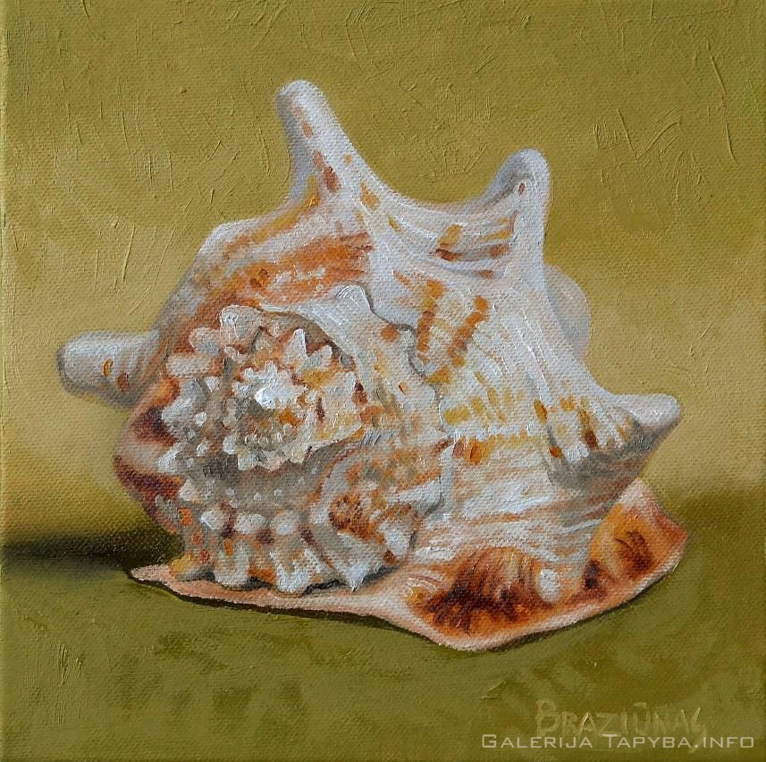

PAVEIKSLŲ TAPYBA IR PARDAVIMAS: 2020 m. kainos
 Prisijungti Reklamuoti paslaugas Prisijungti Reklamuoti paslaugas Gerindami Paslaugos.lt paslaugų kokybę naudojame slapukus. Naršydami toliau, jūs sutinkate su slapukais. Tai galite atšaukti, pakeisdami nustatymus. Plačiau privatumo politikoje . × Paslaugos.lt Dailė, menai, keramika Dailininkai Paveikslų tapyba ir pardavimasPaveikslų tapyba ir pardavimas
(81)Užklausos (22)
2020 m. kainos
Logotipų kūrimas
(215)Knygų iliustravimas
(120)Tapyba ant drobės
(86)Iliustracijų piešimas
(81)Paveikslų tapyba ir pardavimas
(81)Paveikslai pagal užsakymą
(79)Portretų piešimas iš nuotraukų
(77)Sienų dekoravimas
(72)Grafikos darbai
(57)Atvirukų gamyba
(56)Portretų tapyba
(42)Daiktų dekoravimas
(36)Baldų dekoravimas
(30)Šaržų piešimas
(27)Grafiti piešimas
(20) Rodyti daugiau »Tatuiruočių eskizų piešimas
(17)Šeimos herbų kūrimas
(16)Akademinio piešimo pamokos
(15)3D paveikslų tapyba
(12)Aerografija
(12)Stiklo dekoravimas
(11)Tapyba ant šilko
(9)Rankų darbo lėlių gamyba
(8)Paveikslų restauracija
(6)Vitražų gamyba
(4) Siųsk užklausą visiems Apdorota 86 326 užklausų. Gauk pasiūlymus, išsirink tinkamiausią. Kaunas (70) Vilnius (62) Alytus (58) Klaipėda (57) Panevėžys (57) Šiauliai (56) Jonavos r. (60) Kaišiadorių r. (60) Kauno r. (60) Prienų r. (60) Birštonas (60) Kazlų Rūda (60) Elektrėnų sav. (60) Jurbarko r. (59) Kėdainių r. (59) Raseinių r. (59) Šakių r. (59) Širvintų r. (59) Trakų r. (59) Ukmergės r. (59) Vilkaviškio r. (59) Alytaus r. (58) Panevėžio r. (58) Rokiškio r. (58) Kalvarija (58) Marijampolė (58) Anykščių r. (57) Kupiškio r. (57) Molėtų r. (57) Pakruojo r. (57) Pasvalio r. (57) Radviliškio r. (57) Šalčininkų r. (57) Šilutės r. (57) Utenos r. (57) Vilniaus r. (57) Biržų r. (56) Ignalinos r. (56) Joniškio r. (56) Kelmės r. (56) Klaipėdos r. (56) Kretingos r. (56) Lazdijų r. (56) Plungės r. (56) Šiaulių r. (56) Šilalės r. (56) Švenčionių r. (56) Tauragės r. (56) Telšių r. (56) Varėnos r. (56) Zarasų r. (56) Pagėgiai (56) Palanga (56) Rietavas (56) Druskininkų sav. (56) Akmenės r. (55) Mažeikių r. (55) Skuodo r. (55) Visaginas (55) Neringos sav. (54) Daugiausia rekomend. Daugiausia patirties Daugiausia pavyzdžių Filtrai Kategorijos Dailininkai 4 šiandien 200 € 106 29 rekomendacijos 26 m. patirtisSuper realistiški portretai is nuotraukų.
Super realistiški ranka piešti portretai iš Jūsų pateiktų nuotraukų, juodai-balti pieštuku arba aliejiniais dažais ant drobės, portretai pastele ant specialaus popieriaus. Galiu įrėminti.
Anna Lopucha Vinauskienė Kaunas , visa Lietuva Dailininkai 4 prieš 7 d. 500 € 33 0 rekomendacijųDideli tapybos paveikslai interjerui nuo 500 €
Abstraktūs paveikslai šiuolaikiškiems interjerams. Lengvi, madingi, ekspresyvūs arba ramūs - tokie, kokių reikia Jūsų nuotaikai ir Jūsų namams.
Dalia Kirkutienė Klaipėda , visa Lietuva Dailininkai 2 -50% vakar 160 € 23 5 rekomendacijos 11 m. patirtisDailininkas
Portreto tapyba iš nuotraukos.
Vilkas Klaipėdos r. , visa Lietuva Dailininkai 1 -10% prieš 12 d. 60 € 59 14 rekomendacijų 26 m. patirtisPaveikslai ir portretai aliejiniais dažais, piešiniai
Tapau ir parduodu paveikslus aliejiniais dažais, akrilu, mišria technika, tapau ir piešiu portretus, darau paveikslų kopijas.
Viktorija Starygina, dailininkė Vilnius , visa Lietuva Dailininkai 1 -10% vakar 100 € 66 6 rekomendacijos 9 m. patirtisDailininkas
Tapyba realistiniame stiliuje. Taip pat sieninė tapyba. Piešimas , akvarelė. Galiu siūlyti savo kūrybines idėjas ar mėginti įgyvendinti Jūsų.
Gintautas Grušas Vilnius , visa Lietuva Dailininkai 1 -10% vakar 200 € 67 5 rekomendacijos 11 m. patirtisTapyti paveikslai ant drobės
Tapyti originalūs paveikslai ant drobės. Daugiau apie mane ir mano darbus: http://www.rutraart.com/ https://www.instagram.com/rutra.art/ ...
Rutra Art Kaunas Dailininkai 1 -10% vakar 100 € 30 6 rekomendacijos 10 m. patirtisPaveikslai - dovanoms, interjerui
Paveikslai, tapyba pagal individualius užsakymus, sienų tapyba. Įvairūs meno seminarai: tapybos pamokos ant drobės, stiklo tapyba, tapyba ant šilko, vėlimas.
Neringa Klaipėda , visa Lietuva Dailininkai 1 -10% vakar 50 € 67 1 rekomendacija 12 m. patirtisDailininkė Vilniuje
Paveikslų tapymas (norimas vaizdas, nuotrauka/paveikslas bus tikroviškai ir išskirtinai nutapyti aliejiniais dažais ant bet kokio formato natūralios drobės).
Anastasija Juceviciene Vilnius , visa Lietuva Siųsk užklausą visiems Gauk pasiūlymus, išsirink tinkamiausią. Dailininkai 1 -25% šiandien 300 € 122 1 rekomendacija 10 m. patirtisGraffiti, Drobė, Tapyba, Freskos, Akademinis piešimas
Specializing primarily in graffiti murals, paintings, academic drawings. I am determined to pursue my ambition in the design world by seeking opportunities in new and diverse environments.
Frankie Nesbitt Vilnius , visa Lietuva Dailininkai 1 prieš 4 d. € 43 0 rekomendacijųPaveikslai
Tapau ir parduodu paveikslus
Vilma Samackienė Panevėžys , visa Lietuva Dailininkai -10% vakar 30 €/h 49 11 rekomendacijų 4 m. patirtisShaknys: Paveikslai, portretai, iliustracijos, tattoo,
Sveiki, tapau paveikslus pagal užsakymą: Žmonių ir gyvūnų portretus, peizažus ir visą ką susigalvosite. Tapyba galima ne tik ant drobės, bet ir sienų, įvairių baldų ar daiktų. Kuriu tattoo dizainus.
Shaknysart Vilnius , visa Lietuva Dailininkai -10% vakar 500 € 95 16 rekomendacijų 11 m. patirtisVestuvių, krikštynų, gimtadienių - šaržų, portretų piešimas
- Tapau portretus įvairioms progoms - vestuvių, krikštynų, gimtadienių ir t. t. - Piešiu šaržus - Dėstau portreto kursą Dailės Akademijoje Kauno fakultete. portreto.piesimas.lt piesimas.lt
Justinas Krasuckas Kaunas , visa Lietuva Dailininkai -10% vakar 90 € 41 4 rekomendacijos 10 m. patirtisTapyba tobuloms erdvėms
Profesionali spalvinga ir išskirtinė aliejinė tapyba: namams, ofisams, kitoms viešosioms ir privačioms erdvėms. (Galerijoje esantys darbai parduodami).
Kristina Vilnius , visa Lietuva Dailininkai vakar 50 € 106 6 rekomendacijos 9 m. patirtisDailininkė Kaune
Piešiu portretus, šaržus, tapau paveikslus, individualiai tapau ant sienų.
Karolina Ale Kaunas , visa Lietuva Dailininkai vakar 160 € 40 13 rekomendacijų 20 m. patirtisUnikalūs portretai iš Jūsų pateiktų nuotraukų.
Galite užsakyti portretus.Jūsų vaikučių, mylimų žmonių, augintinių portretus.Portretai įvairioms progoms.Atlikimo technika-skaitmeninė grafika.Čia matote portretų pavyzdžius. Kaina- nuo160 eur.
Tautvydas Davainis Vilnius , visa Lietuva Dailininkai -10% vakar 50 € 76 6 rekomendacijos 8 m. patirtisŠilti paveikslai Jūsų namams
Paveikslų tapyba ant drobės ir popieriaus - abstrakcijos, aktai, individualūs užsakymai. Tapyba aliejiniais, akriliniais dažais, akvarele.
Jurgita Galdikaitė Kaunas , visa Lietuva Dailininkai vakar € 1259 13 rekomendacijų 20 m. patirtisAutoriniai skaitmeninės grafikos darbai. Rinkitės patikusį!
Čia Jūs galite išsirinkti Jums patinkančius, mano autorinius, skaitmeninės grafikos darbus.Paveikslai - ant drobės,užtraukti ant porėmio,pristatomi į pageidaujamą vietą. Kaina- nuo 140eur. (80x60cm.)
Tautvydas Davainis Vilnius , visa Lietuva Dailininkai -10% vakar 100 € 146 5 rekomendacijos 16 m. patirtisSienų tapyba, grafika Piesiniai ant sienu dekoravimas
Sienų tapyba, grafika.
Julija Janiulienė Vilnius , visa Lietuva Dailininkai vakar 90 € 69 7 rekomendacijosDailininkė, grafikos dizainerė Kaune
Rūta Kaunas , visa Lietuva Dailininkai vakar € 68 7 rekomendacijos
Aart
AArt Kaunas 1 2 3 … 5 Toliau Populiariausi miestai Paveikslų tapyba ir pardavimas Kaune Paveikslų tapyba ir pardavimas Vilniuje Paveikslų tapyba ir pardavimas Alytuje Paveikslų tapyba ir pardavimas Klaipėdoje Paveikslų tapyba ir pardavimas Panevėžyje Paveikslų tapyba ir pardavimas Šiauliuose Rinktis iš sąrašo × Siųsk užklausą 1. Aprašyk savo poreikį 2. Gauk pasiūlymus 3. Išsirink tinkamiausią D.U.K. Taisyklės Privatumo politika Apie mus Blogas Kontaktai Facebook Instagram Struktūra Kategorijos Paslaugų teikėjams Klausk profesionalų
Copyright © UAB „Diginet LTU“, 2012-2020. Visos teisės saugomos.
D I G I N E T Aruodas.lt Autoplius.lt Cvbankas.lt Kainos.lt NTzemelapis.lt Paslaugos.lt Skelbiu.lt